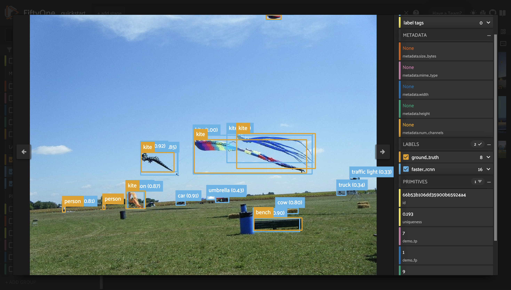

FiftyOne ¶¶
The open-source tool for building high-quality datasets and computer vision models
Nothing hinders the success of machine learning systems more than poor quality data. And without the right tools, improving a model can be time-consuming and inefficient.
FiftyOne supercharges your machine learning workflows by enabling you to visualize datasets and interpret models faster and more effectively.
Improving data quality and understanding your model’s failure modes are the most impactful ways to boost the performance of your model.
FiftyOne provides the building blocks for optimizing your dataset analysis pipeline. Use it to get hands-on with your data, including visualizing complex labels, evaluating your models, exploring scenarios of interest, identifying failure modes, finding annotation mistakes, and much more!
FiftyOne integrates naturally with your favorite tools. Click on a logo to learn how:


Note
FiftyOne is growing! Sign up for the mailing list to learn about new features as they come out.
Core Capabilities ¶¶
Curating datasets¶
Surveys show that machine learning engineers spend over half of their time wrangling data, but it doesn't have to be that way. Use FiftyOne's powerful dataset import and manipulation capabilities to manage your data with ease.
Learn how to load data into FiftyOne

Evaluating models¶
Aggregate metrics alone don’t give you the full picture of your ML models. In practice, the limiting factor on your model’s performance is often data quality issues that you need to see to address. FiftyOne makes it easy to do just that.
See how to evaluate models with FiftyOne

Visualizing embeddings¶
Are you using embeddings to analyze your data and models? Use FiftyOne's embeddings visualization capabilities to reveal hidden structure in you data, mine hard samples, pre-annotate data, recommend new samples for annotation, and more.
Experience the power of embeddings

Working with geolocation¶
Many datasets have location metadata, but visualizing location-based datasets has traditionally required closed source or cloud-based tools. FiftyOne provides native support for storing, visualizing, and querying datasets by location.

Finding annotation mistakes¶
Annotations mistakes create an artificial ceiling on the performance of your model. However, finding these mistakes by hand is not feasible! Use FiftyOne to automatically identify possible label mistakes in your datasets.
Check out the label mistakes tutorial

Removing redundant images¶
During model training, the best results will be seen when training on unique data. Use FiftyOne to automatically remove duplicate or near-duplicate images from your datasets and curate diverse training datasets from your raw data.
Try the image uniqueness tutorial

Core Concepts ¶¶
FiftyOne Library ¶¶
FiftyOne’s core library provides a structured yet dynamic representation to explore your datasets. You can efficiently query and manipulate your dataset by adding custom tags, model predictions and more.
import fiftyone as fo
dataset = fo.Dataset("my_dataset")
sample = fo.Sample(filepath="/path/to/image.png")
sample.tags.append("train")
sample["custom_field"] = 51
dataset.add_sample(sample)
view = dataset.match_tags("train").sort_by("custom_field").limit(10)
for sample in view:
print(sample)
Note
FiftyOne is designed to be lightweight and flexible, making it easy to load your datasets. FiftyOne supports loading datasets in a variety of common formats out-of-the-box, and it also provides the extensibility to load datasets in custom formats.
Check out loading datasets to see how to load your data into FiftyOne.
FiftyOne App ¶¶
The FiftyOne App is a graphical user interface that makes it easy to explore and rapidly gain intuition into your datasets. You can visualize labels like bounding boxes and segmentations overlaid on the samples; sort, query and slice your dataset into any subset of interest; and more.

FiftyOne Brain ¶¶
The FiftyOne Brain is a library of powerful machine learning-powered capabilities that provide insights into your datasets and recommend ways to modify your datasets that will lead to measurably better performance of your models.
import fiftyone.brain as fob
fob.compute_uniqueness(dataset)
rank_view = dataset.sort_by("uniqueness")
FiftyOne Plugins ¶¶
FiftyOne provides a powerful plugin framework that allows for extending and customizing the functionality of the tool to suit your specific needs.
With plugins, you can add new functionality to the FiftyOne App, create integrations with other tools and APIs, render custom panels, and add custom buttons to menus.
With FiftyOne Teams, you can even write plugins that allow users to execute long-running tasks from within the App that run on a connected compute cluster.

Dataset Zoo ¶¶
The FiftyOne Dataset Zoo provides a powerful interface for downloading datasets and loading them into FiftyOne.
It provides native access to dozens of popular benchmark datasets, and it als supports downloading arbitrary public or private datasets whose download/preparation methods are provided via GitHub repositories or URLs.
import fiftyone as fo
import fiftyone.zoo as foz
dataset = foz.load_zoo_dataset("coco-2017", split="validation")
session = fo.launch_app(dataset)

Model Zoo ¶¶
The FiftyOne Model Zoo provides a powerful interface for downloading models and applying them to your FiftyOne datasets.
It provides native access to hundreds of pre-trained models, and it also supports downloading arbitrary public or private models whose definitions are provided via GitHub repositories or URLs.
import fiftyone as fo
import fiftyone.zoo as foz
dataset = foz.load_zoo_dataset(
"coco-2017",
split="validation",
max_samples=50,
shuffle=True,
)
model = foz.load_zoo_model(
"clip-vit-base32-torch",
text_prompt="A photo of a",
classes=["person", "dog", "cat", "bird", "car", "tree", "chair"],
)
dataset.apply_model(model, label_field="zero_shot_predictions")
session = fo.launch_app(dataset)
What’s Next? ¶¶
Where should you go from here? You could…
-
Try one of the tutorials that demonstrate the unique capabilities of FiftyOne
-
Explore recipes for integrating FiftyOne into your current ML workflows
-
Check out the cheat sheets for topics you may want to master quickly
-
Consult the user guide for detailed instructions on how to accomplish various tasks with FiftyOne
Need Support? ¶¶
If you run into any issues with FiftyOne or have any burning questions, feel free to connect with us on Discord or reach out to us at support@voxel51.com.